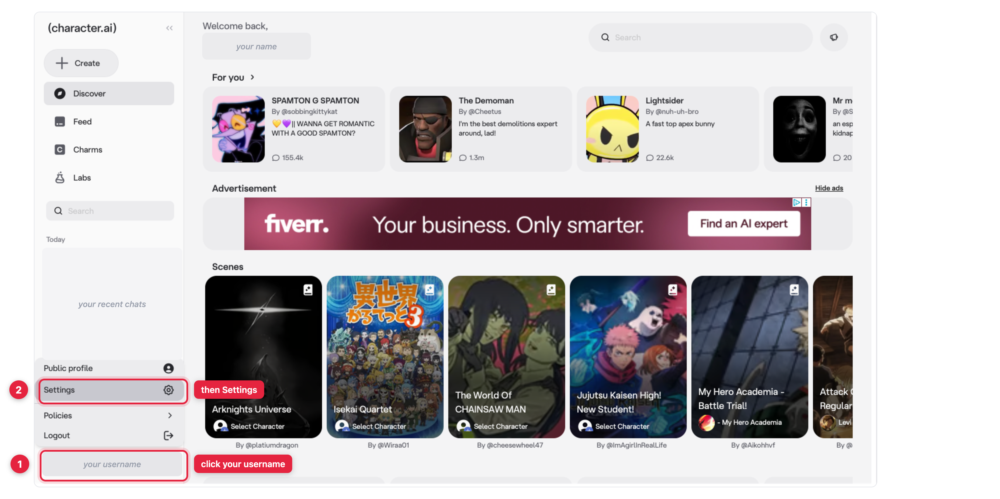
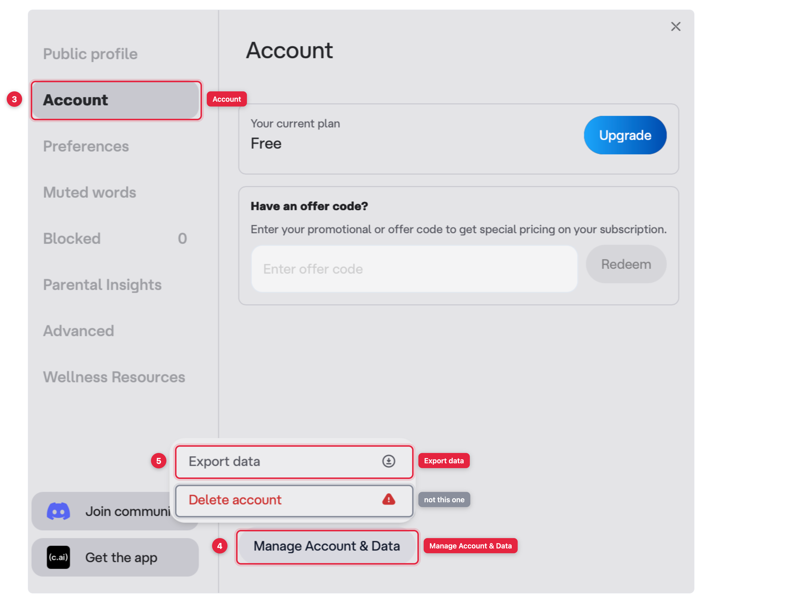
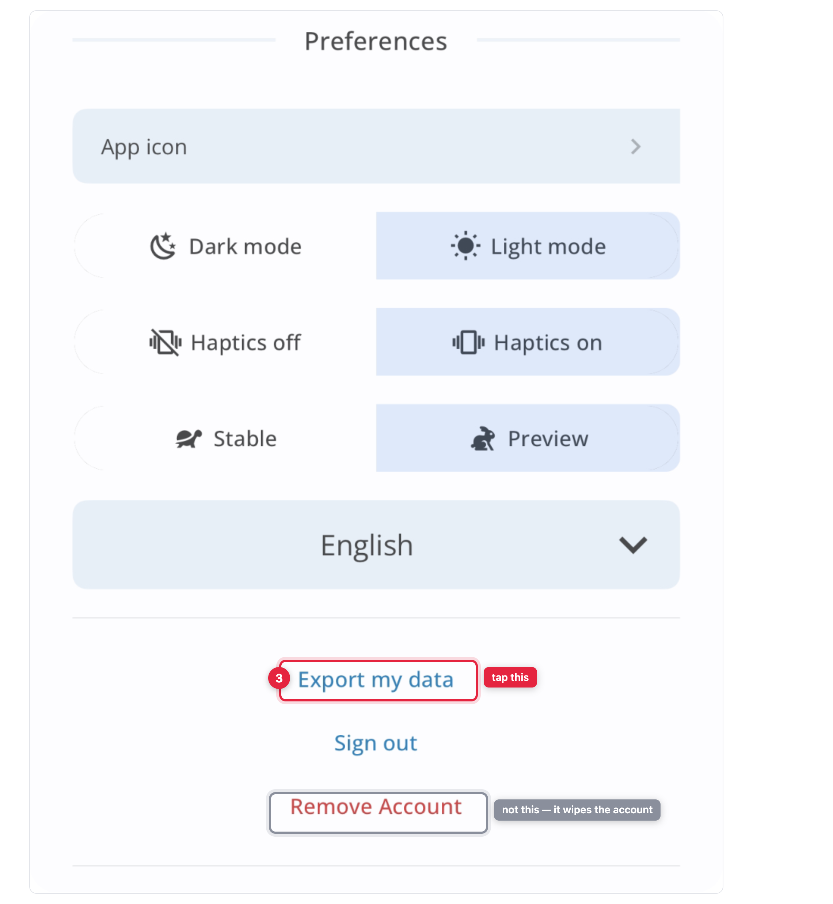

Export your Character.AI data
Character.AI filed for Chapter 11 on 12 October 2026. The platform is still running, and it has a built-in export — five clicks, no extra software. Here is exactly where to click, on the current interface.
Why the hurry. The court-supervised sale is expected to close in late November or early December 2026, and the company has said the platform could be wound down if no buyer keeps it running. No shutdown date has been set.
The company says your data stays protected under its Privacy Policy. That policy also permits disclosure of data in a sale of company assets, and the company has not said whether chat logs are among the assets for sale. Export while the export button still works.
Before you start
- It is not instant
- An account-wide request, not a per-chat download. You ask, then wait — reports put it anywhere from about an hour to several days.unverified
- The link expires
- Download it as soon as it arrives. The link is reported to expire within a day or two.unverified Do not request it and then go away for the weekend.
- Check it is complete
- A zip of JSON covering your account, characters and messages.unverified One report says very long chats can come back missing their oldest messages, so open the file and check your longest conversation is all there.
The steps below were taken from the live site. Anything tagged unverified comes from third-party guides rather than the company, so treat it as a rough expectation.
On the web
-
1
Click your username
At the very bottom of the left sidebar, once you are signed in.
-
2
Choose Settings
From the small menu that pops up, above Policies and Logout.

-
3
Choose Account
Second from the top of the settings sidebar, under Public profile.
-
4
Click Manage Account & Data
At the bottom left of the panel, on its own, well below the plan and offer-code boxes. Easy to miss.
-
5
Select Export data
A small menu opens above the button. Delete account sits directly beneath Export data and wipes everything, so aim carefully. Choosing Export data lodges the request; they email you when the zip is ready.

In the phone app
- 1
Open your profile
- 2
Tap the settings icon
-
3
Tap Export my data
Near the bottom of Preferences. Remove Account sits two rows below it, in red, and deletes everything.

When the file arrives
Open the zip and check it before you count on it. Find your longest conversation and scroll to the beginning — that is where truncation would show up. Then keep a copy somewhere that is not a downloads folder you will clear out.
Donating it to an open-source model
Entirely optional. Your export is yours, and keeping it is a perfectly good reason to have made one. But if you want it to outlive the company in a different way, it can become training data for a companion model anyone can download and run.
Part of the point is that the characters feel like the ones you knew. A model learns how these conversations actually go — the voice, the pacing, how a character stays in role when a scene turns — from transcripts of the real thing, and synthetic data does not capture it. The more real conversations go in, the closer the open-source characters land to the ones on Character.AI. That is the reason for asking.
Upload your export
cai-export.vercel.appThe site says whether it is currently accepting uploads. If it says it is not open, that is working as intended rather than broken.
Your conversations are not published. There is no plan to release the collected text as a public dataset, post it anywhere, sell it, or pass it to anyone outside the project. It is training material, kept private. What is released publicly is the model — the finished weights, for anyone to download.
Those two facts do not cancel out, and this is the part worth reading twice. A model can memorise pieces of what it was trained on and repeat them to someone else later; distinctive text is the most likely to come back out. Keeping the dataset private makes that far less likely than publishing it would, but not impossible. A Character.AI export is uploaded exactly as it came — nothing in it is redacted. Open the zip and read it first if you are unsure what is in there.
The upload itself is encrypted in your browser, so the server stores something it cannot read. Your browser generates a deletion code and sends only a one-way hash of it, so you can delete the donation later by pasting that code — no email address, no account, nothing that identifies you. Deleting stops your conversations being used in future training runs; it cannot reach inside a model already trained on them and released, so do it sooner rather than later if you change your mind.
You never need to install anything, and you should never have to hand over your Character.AI password or let a tool sign in as you. Anyone who asks for either is not worth trusting with this.